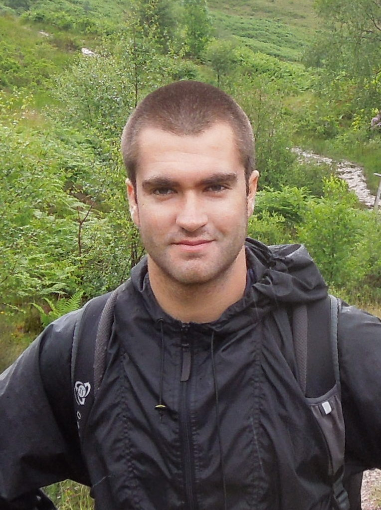

David Belanger's Research Homepage
I am a research scientist at Google Deepmind using machine learning to improve our understanding of natural proteins and to engineer novel proteins. In grad school, I was advised by Andrew McCallum and my work spanned graphical models, structured prediction, natural language processing, and deep learning. I am interested in a wide range of machine learning methods and applications. Reach out to me if you want to chat!
Research Publications
Thomas, N. (*), Belanger, D. (*), Xu, C., Lee, H., Hirano, K., Iwai, K., Polic, V., Nyberg, K. D., Hoff, K., Frenz, L., Emrich, C. A., Kim, J. W., Chavarha, M., Ramanan, A., Agresti, J. J., Colwell, L. J. "Engineering highly active and diverse nuclease enzymes by combining machine learning and ultra-high-throughput screening." Cell Systems, 2025. link
Shaw, P., Gurram, B., Belanger, D., Gane, A., Bileschi, M.L., Colwell, L.J., Toutanova, K., Parikh, A. "ProtEx: A Retrieval-Augmented Approach for Protein Function Prediction." Biorxiv, 2024. link
Sanderson, T., Bileschi, M.L., Belanger, D., Colwell, L.J. "ProteInfer, deep neural networks for protein functional inference." Elife, 2023. link
Thomas, N., Agarwala, A., Belanger, D., Song, Y.S., Colwell, L.J. "Tuned Fitness Landscapes for Benchmarking Model-Guided Protein Design." bioRxiv, 2022. link
Papalexopoulos, T., Tjandraatmadja, C., Anderson, R., Vielma, J.P., Belanger, D.. "Constrained Discrete Black-Box Optimization using Mixed-Integer Programming." ICML 2022. pdf
Chao, S., Belanger, D., "Generalizing Few-Shot Classification of Whole-Genome Doubling Across Cancer Types." Pacific Sympsium On Biocomputing 2022. pdf
Bileschi, M., Belanger, D., Bryant, D., , Carter, B., Sculley, D., DePristo, M. A., Colwell, L.. "Using Deep Learning to Annotate the Protein Universe." Nature Biotechnology. Feb 2022. pdf
Angermueller, C. Belanger, D., Gane, A., Mariet, Z., Dohan, D., Murphy, K., Colwell, L. Sculley, D.. "Population-Based Black-Box Optimization for Biological Sequence Design." ICML 2020. pdf
Angermueller, C., Dohan, D., Belanger, Deshpande, R., Murphy, K., Colwell, L.. "Model-Based Reinforcement Learning for Biological Sequence Design." ICLR 2020. pdf
Carter, B., Bileschi, M., Smith, J., Sanderson, T. Bryant, D., Belanger, D., Colwell, L.. "Critiquing Protein Family Classification Models Using Sufficient Input Subsets." Journal of Computational Biology 2019. pdf
Teterwak, P., Sarna, A., Krishnan, D., Maschinot, A., Belanger, D., Liu, C., Freeman, W. T.. "Boundless: Generative Adversarial Networks for Image Extension." ICCV 2019. pdf
Wei, J., Belanger, D., Adams, R. P., Sculley, D.. "Predicting Electron-Ionization Mass Spectrometry using Neural Networks." ACS Central Science 2019, 5, 4 700-708. pdf code
Mena, G., Belanger, D., Linderman, S., Snoek, J.. "Learning Latent Permutations with Gumbel-Sinkhorn Networks." ICLR 2018. pdf
Kelley, D., Reshef, Y., M. Bileschi, Belanger, D., McLean, C., Snoek, J.. "Sequential Regulatory Activity Prediction Across Chromosomes with Convolutional Neural Networks." Genome Research. pdf
"Deep Energy-Based Models for Structured Prediction." Winner of the 2017 UMass CS best PhD dissertation award. pdf
Belanger, D. Yang, B., McCallum, A. "End-to-End Learning for Structured Prediction Energy Networks." ICML 2017. pdf
Cole, F., Belanger, D., Krishnan, D., Sarna, A., Mosseri, I., Freeman, W. T.. "Face Synthesis from Facial Identity Features." CVPR 2017. pdf
Strubell, E., Verga, P., Belanger, D., McCallum, A. "Fast and Accurate Sequence Labeling with Iterated Dilated Convolutions." EMNLP 2017. pdf
Das, R., Neelakantan, A., Belanger, D., McCallum, A. "Chains of Reasoning over Entities, Relations, and Text using Recurrent Neural Networks." EACL 2017. pdf code.
Belanger, D., McCallum, A. "Structured Prediction Energy Networks." ICML 2016. pdf slides code video data
Bansal, T., Belanger, D., McCallum, A. "Ask the GRU: Multi-task Learning for Deep Text Recommendations." RecSys 2016. pdf
Verga, P., Belanger, D., Strubell, E., Roth, B., McCallum, A. "Multilingual Relation Extraction using Compositional Universal Schema." NAACL 2016. pdf code video .
Kui, T., Ruozzi, N., Belanger, D., Jebara, T. "Bethe Learning of Conditional Random Fields via MAP Decoding." AISTATS 2016. pdf.
Vilnis (*), L., Belanger (*), D., Sheldon, D., McCallum, A. "Bethe Projections for Non-Local Inference." UAI 2015. pdf. (* equal contribution)
Belanger, D., Kakade, S. "A Linear Dynamical System Model for Text." ICML 2015. pdf slides video code
Belanger, D., Passos, A., Riedel, S., A. McCallum. "Message Passing for Soft Constraint Dual Decomposition." UAI 2014. pdf
Anzaroot, S., Passos, A., Belanger, D., A. McCallum. "Learning Soft Linear Constraints with Application to Citation Field Extraction." ACL 2014. pdf
Belanger, D., D. Sheldon, A. McCallum. "Marginal Inference in MRFs using Frank-Wolfe." NIPS 2013 workshop on Greedy Optimization, Frank-Wolfe and Friends. pdf talk video
Belanger (*), D., Passos (*), A., S. Riedel, A. McCallum. "MAP Inference in Chains using Column Generation." NIPS 2012. pdf code workshop talk video (* equal contribution)
Vitaladevuni, S., H. Cao, D. Belanger, K. Subramanian, R. Prasad, P. Natarajan. "Sparsity-based super-resolution for offline handwriting recognition," 2011 Joint Workshop on Multilingual OCR and Analytics for Noisy Unstructured Text Data.
pdf
Natarajan, P., D. Belanger, R. Prasad, M. Kamali, K Subramanian, P. Natarajan. "Baseline Dependent Percentile Features for Offline Arabic Handwriting Recognition," ICDAR 2011. pdf
Prasad, R., M. Kamali, D. Belanger, A.V. Rosti, S. Matsoukas, P. Natarajan. "Consensus Network Based Hypotheses Combination for Arabic Offline Handwriting Recognition," ICPR 2010. pdf
Dunham, E. M., D. Belanger, L. Cong, and J. E. Kozdon (2011), "Earthquake ruptures with strongly rate-weakening friction and off-fault plasticity, 1: Planar faults," Bulletin of the Seismological Society of America, 101 (5), 2296-2307. pdf
Dunham, E. M., D. Belanger, L. Cong, and J. E. Kozdon (2011), "Earthquake ruptures with strongly rate-weakening friction and off-fault plasticity, 2: Nonplanar faults," Bulletin of the Seismological Society of America, 101 (5), 2308-2322. pdf
Dunham, E. M., D. Belanger, L. Cong, and J. E. Kozdon (2011), "Earthquake ruptures on rough faults," in Multiscale and Multiphysics Processes in Geomechanics (results of workshop at Stanford Univ., June, 2010), Springer Series in Geomechanics and Geoengineering, edited by Ronaldo I. Borja, pp. 145-148 pdf
Belanger, D. and Dunham, E. M. (2008), "Dynamic Rupture on Rough Faults and Production of High-Frequency Radiation." Poster, American Geophysical Union Fall 2008 Meeting. pdf
Belanger, D. and Dunham, E. M. (2008), “A Finite Difference Method for Irregular Geometries: Application to Dynamic Rupture on Rough Faults.” Poster, Southern California Earthquake Center 2008 Annual Meeting. pdf